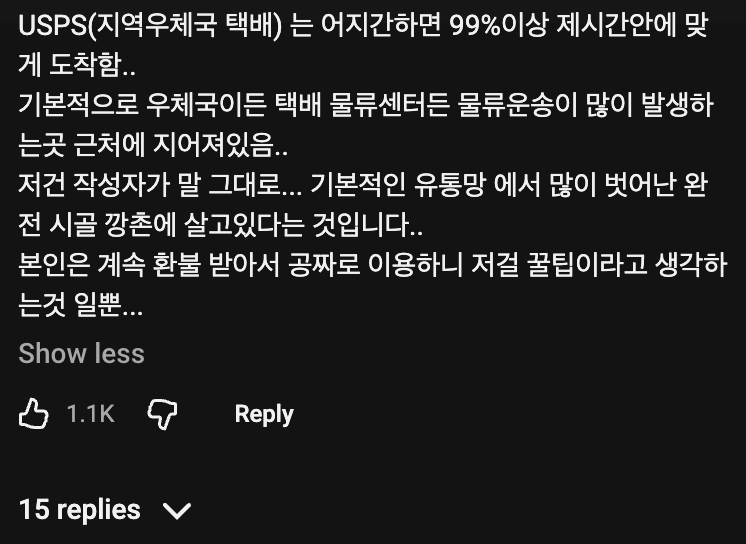

우스푸스 늦는거 좀 유명함 ㅋㅋ 뉴욕살때도 저래서 자주 환불받음
교환학생 갔을 때 아마존련 배송완료 해놓고 안보여서 ㅈㄴ 서럽고 당황했는데 3일인가 후에 받음 ㅅㅂ
엥 그거 리포트하면 똑같은거 또 보내줌. 물론 또온거 반송하겠다하면 가지라고 함
1+1ㅋㅋㅋㅋ
뭔 개소리야 ㅋㅋ 우체부를 너무 물로 보네
미국 땅덩이랑 법 생각하면 가능해보이는데 구라임?
당연히 구라지 왜냐면 이제 1~3일로 변경했거든 ㅋㅋㅋ
물맞아...아마존이 왜 자기 유통망설치했는데
아마존 최고지
폴아웃 뉴베가스
안그래도 미국 우체국은 적자 심각한데 저런거 자주 하면 시스템 자체가 칼질당하겠지
쿠팡식 해결법 : 배송완료를 미리 찍고나서 갖다준다
usps가 우리나라 우체국 포지션인데 개쓰레기 적자 병신이라
물류 창고 오면 배송 기사들이 배송 전에 미리 배송완료 스캔 뜨고
길게 2주 있다가 배송함. 미친새끼들임. 그래서 분실 사고도 이새끼들 압도적이다. 분실 신고하면 회수 실패했음, 너 보험 안 들었네? ㅅㄱ 이지랄. 다른 사설 쓰는게 나음.
미국 이민 올 때에 우체국에서 EMS 통해서 미국으로 보내니까 미국 내 배송은 USPS가 담당하게 되었는데, 상자 10개 중에 3개는 제대로 오고, 2개는 사라지고, 5개는 주소도 하나도 안 비슷한 딴집에 배송했음
진찌 병신들 맞음
저게 되려면 우체부가 매일 오지 않는 지역에 살아야함... 말도 못하는 깡촌이라는것...